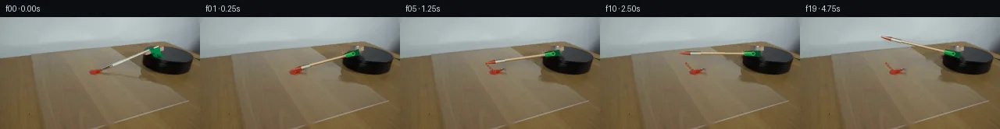
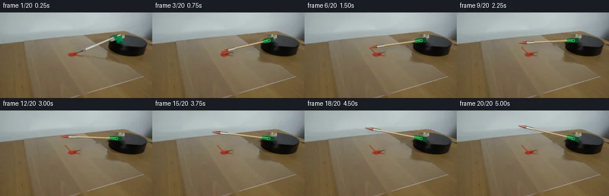
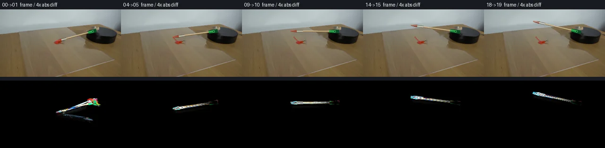

V0 · 初版即最终版
![]()
Observable Generation Trace
把最终像素视频、Harness 冻结的每轮候选、真实工具事件和 Agent 自述放在同一页。可观测证据与模型自述分开标记，避免把“模型说它检查过”误当成真实工具调用。
![首帧]()
Static locked-off single-shot with fixed frame throughout filmed with constant framerate in real-time. The scene shows a realistic scientific demonstration. The scene only contains the described setup and actions. On top of the acrylic sheet was placed a small dollop of red paint. The paintbrush is attached to the black platform sitting next to the clear acrylic sheet with red paint on it on a wooden table. The paintbrush rotates clockwise on the black platform, passes through the dollop of red paint on the clear acrylic sheet, and moves past the dollop of red paint.
首帧显示在左侧播放器初始画面。Track 权限、隔离和 tensor 一致性来自 run manifest，而不是 METHOD.md。
上方并排显示初版和最终版，默认同步播放；下方每个版本可独立播放，也可勾选加入同步播放。仅检查图更新的连续重复快照已合并，回退旧视频仍保留为一次修订。
Observable events
来源：events.jsonl + run manifest
此 Track 禁止读取输出图片。逐轮预览由外部 Harness 自动冻结，只用于事后审计，生成 Agent 当时看不到这些页面。
Frozen candidates
每张图来自该 round 的真实 00 / 01 / 05 / 10 / 19 帧

pixels 1d415047d7e0a16a · code d44a4f4ea7115fe2
--- previous/generate.py
+++ current/generate.py
@@ -0,0 +1,232 @@
+#!/usr/bin/env python3
+"""Generate the 20-frame PixelWorld continuation using local pixel operations only."""
+
+from pathlib import Path
+import math
+
+import cv2
+import numpy as np
+from PIL import Image, ImageDraw, ImageFilter
+
+from artifact_io import save
+
+
+ROOT = Path(__file__).resolve().parent
+W, H = 256, 144
+S = 4 # supersampling for thin, antialiased geometry
+PIVOT = np.array([196.0, 47.0])
+
+# Local tabletop coordinates -> camera pixels. Vertical distances on the
+# tabletop are foreshortened; the small x shear follows the acrylic edges.
+TABLE_TO_SCREEN = np.array([[1.0, 0.20], [0.0, 0.55]])
+TIP0_SCREEN = np.array([121.0, 70.0])
+TIP0_TABLE = np.linalg.solve(TABLE_TO_SCREEN, TIP0_SCREEN - PIVOT)
+
+
+def rotation_clockwise(degrees):
+ a = math.radians(degrees)
+ return np.array([[math.cos(a), -math.sin(a)],
+ [math.sin(a), math.cos(a)]])
+
+
+def project(table_point, degrees):
+ return PIVOT + TABLE_TO_SCREEN @ (rotation_clockwise(degrees) @ np.asarray(table_point))
+
+
+def q(point):
+ """Scale a floating screen-space point for the supersampled canvas."""
+ return tuple(np.rint(np.asarray(point) * S).astype(int))
+
+
+def polygon_for_axis(p0, p1, half_width0, half_width1):
+ """Tapered screen-space polygon around an axis segment."""
+ p0, p1 = np.asarray(p0), np.asarray(p1)
+ d = p1 - p0
+ n = np.array([-d[1], d[0]]) / max(np.linalg.norm(d), 1e-6)
+ return [q(p0 + n * half_width0), q(p1 + n * half_width1),
+ q(p1 - n * half_width1), q(p0 - n * half_width0)]
+
+
+def rgba_layer():
+ return Image.new('RGBA', (W * S, H * S), (0, 0, 0, 0))
+
+
+def composite(base, layer):
+ small = layer.resize((W, H), Image.Resampling.LANCZOS)
+ return Image.alpha_composite(base.convert('RGBA'), small)
+
+
+def clean_background(source):
+ """Remove the source pose while retaining the dollop and platform."""
+ src = np.asarray(source).copy()
+ mask = np.zeros((H, W), np.uint8)
+
+ # Original pale handle and its down-right soft shadow/reflection.
+ cv2.line(mask, (128, 68), (198, 43), 255, 5, cv2.LINE_AA)
+ cv2.line(mask, (129, 73), (191, 84), 255, 7, cv2.LINE_AA)
+
+ # Select the vivid green clamp itself and a small antialias fringe. This
+ # avoids erasing the neighboring black turntable more than necessary.
+ r, g, b = src[..., 0], src[..., 1], src[..., 2]
+ green = ((g > 55) & (g > r * 1.18) & (g > b * 1.08)).astype(np.uint8) * 255
+ green[:35] = 0
+ green[58:] = 0
+ green[:, :178] = 0
+ green[:, 216:] = 0
+ green = cv2.dilate(green, np.ones((4, 4), np.uint8), iterations=1)
+ mask = np.maximum(mask, green)
+
+ # Keep every source red pixel in the paint dollop untouched.
+ mask[64:77, 110:133] = 0
+ cleaned = cv2.inpaint(cv2.cvtColor(src, cv2.COLOR_RGB2BGR), mask, 3,
+ cv2.INPAINT_TELEA)
+ cleaned = cv2.cvtColor(cleaned, cv2.COLOR_BGR2RGB)
+ return Image.fromarray(cleaned), mask
+
+
+def draw_fixed_paint(base, angle):
… diff truncated; 145 more lines …Final visual checks
Harness 保存的最终产物


Agent claims
以下文字由生成 Agent 撰写，不等同于工具证据
first_frame.png, RGB, 256 x 144. The camera is locked and the entire background must remain fixed.(91, 60), (191, 35), (242, 108), (133, 143).182..248 x 35..64, with the visible front/side continuing to about y=72.(196, 47). Green clamp pixels occupy approximately 185..212 x 39..52.(196, 47) to paint/brush tip (123, 70), about 76 px in screen projection.114..129 x 67..73, centered near (121, 70). It is already at the brush tip in frame 00, so the continuation begins with contact and then visibly moves beyond it.The brush is a rigid body turning clockwise around the fixed platform pivot. Because it lies in the tabletop plane, rotation is computed in a rectified tabletop coordinate system and projected back into the camera view. The first generated continuation stays close to frame 00, then accelerates gently, crosses the paint, and eases after clearing it. The black circular platform remains stationary in silhouette while its green clamp, brush, and their soft shadows rotate.
Contact leaves a short red loaded streak on the moving bristles and a narrow curved smear immediately past the original dollop. The paint mark stays on the acrylic after deposition; only the brush/mount moves.
| Frame | Time | Event |
|---|---|---|
| 00 | 0.00 s | Exact supplied image; brush tip is entering/touching the red dollop. |
| 01 | 0.25 s | Tiny clockwise advance; bristles compress through the near edge. |
| 02 | 0.50 s | Brush axis advances clockwise; red contact area broadens. |
| 03 | 0.75 s | Bristles pass through the dollop center and pick up red paint. |
| 04 | 1.00 s | Tip reaches the far edge; first short curved smear appears. |
| 05 | 1.25 s | Tip clears the main dollop while remaining visibly paint-loaded. |
| 06 | 1.50 s | Clockwise sweep continues; thin wet red trail lengthens. |
| 07 | 1.75 s | A clear gap/neck develops between moving tip and original blob. |
| 08 | 2.00 s | Brush moves farther past the paint; smear remains fixed on acrylic. |
| 09 | 2.25 s | Continued smooth rotation with no camera motion. |
| 10 | 2.50 s | Brush reaches the middle of the post-contact sweep. |
| 11 | 2.75 s | Red on bristle tip becomes slightly less saturated. |
| 12 | 3.00 s | Platform clamp orientation clearly demonstrates clockwise motion. |
| 13 | 3.25 s | Brush continues past the dollop; fixed paint mark unchanged. |
| 14 | 3.50 s | Rotation begins easing while remaining continuous. |
| 15 | 3.75 s | Brush is well clear of the original red paint. |
| 16 | 4.00 s | Late clockwise sweep; soft moving shadow tracks the brush. |
| 17 | 4.25 s | Motion slows without reversing. |
| 18 | 4.50 s | Near-final orientation; residual wet red remains at tip. |
| 19 | 4.75 s | Final pose past the dollop, held in the same locked-off scene. |
The sequence is a deterministic local pixel animation built from the supplied first_frame.png; no outside images, models, masks, engines, or references are used.
(196, 47). Rotation happens in a rectified tabletop coordinate system with vertical foreshortening and a small shear, then projects back to the camera image. This produces a perspective-consistent arc rather than a flat image-plane spin.artifact_io.save writes the frame PNGs, packed uint32 tensor, inspection contact sheet, and standalone HTML player. transition_check.png contains selected generated frames above 4x absolute-difference maps.Later generated outputs were not opened with an image-viewing tool. Validation was performed with local array/code checks for dimensions, frame-00 identity, tensor/PNG equality, motion trajectories, changed-pixel bounds, temporal deltas, fixed-background stability, and HTML payload structure.